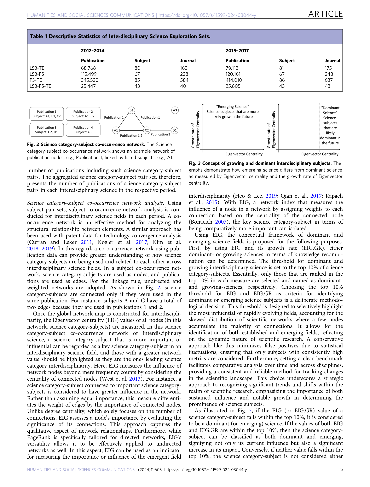
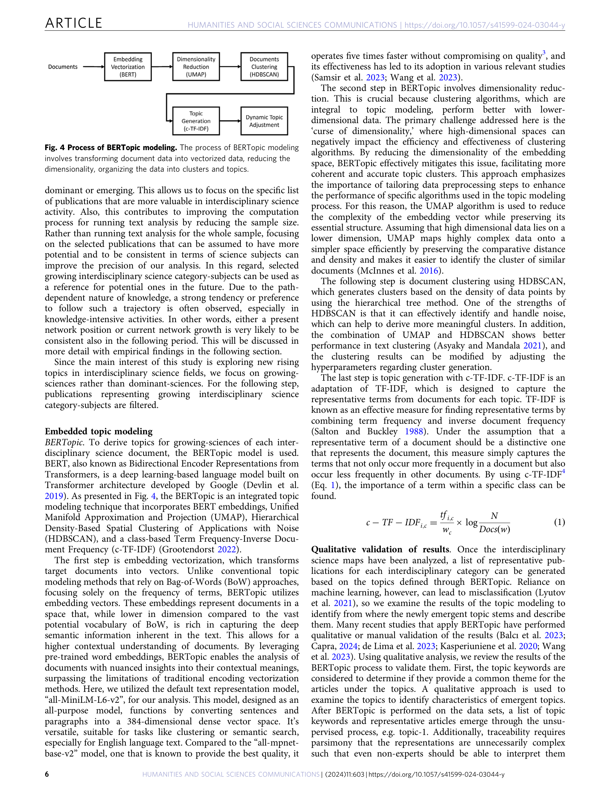
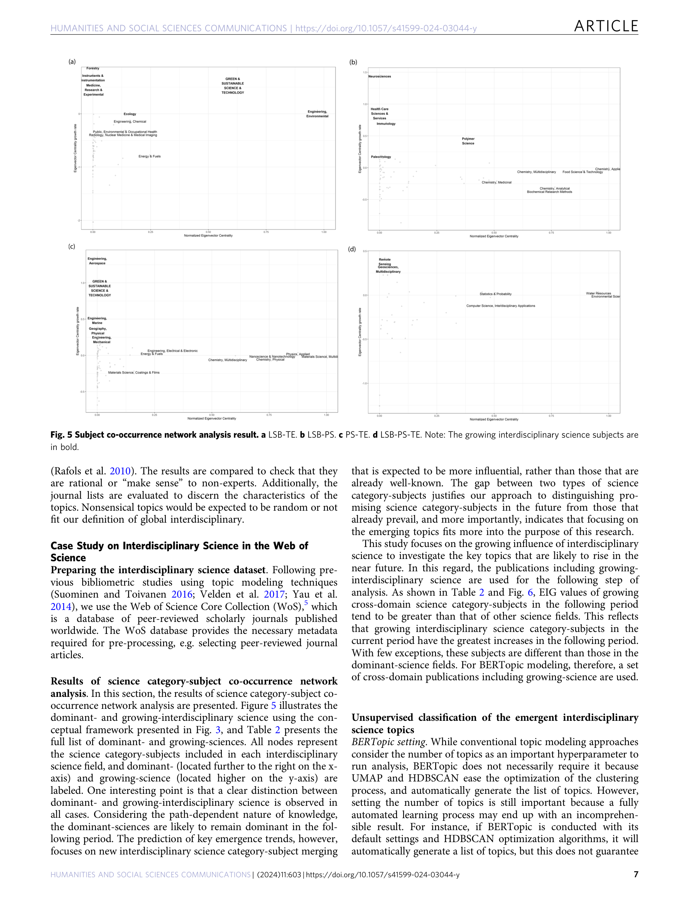

Figure 1
저자: Keungoui Kim, Dieter F. Kogler, Sira Maliphol | 날짜: 2024-05-10 | Journal: Humanities and Social Sciences Communications | DOI: 10.1057/s41599-024-03044-y
Figure 1
네트워크 분석(Eigenvector centrality)과 BERTopic을 결합하여 글로벌 학제간 과학의 emergence를 식별하는 새로운 방법론을 제시한다. Web of Science 메타데이터 약 745만 건(2012-2017) 중 학제간 논문 119만여 건을 분석한 결과, dominant science와 growing science가 명확히 구분되며, growing-science의 Eigenvector centrality는 다음 기간에 평균 0.348로 기타(0.093) 대비 약 3.7배 높은 값을 보여, 성장하는 학제간 분야가 실제로 영향력이 커짐을 확인했다. 주요 emerging topic으로 green technology와 health-related technology가 전 학제간 카테고리에서 공통적으로 나타났다.

Figure 2

Figure 3

Figure 4

Figure 5
총평: 네트워크 중심성과 BERTopic을 결합하여 글로벌 학제간 emergence를 탐지하는 독창적 프레임워크를 제시했으나, 임계값 민감도 분석 부재, 제한된 시간 범위, 기존 방법론과의 비교 실험 결여로 방법론적 엄밀성이 다소 부족하다.